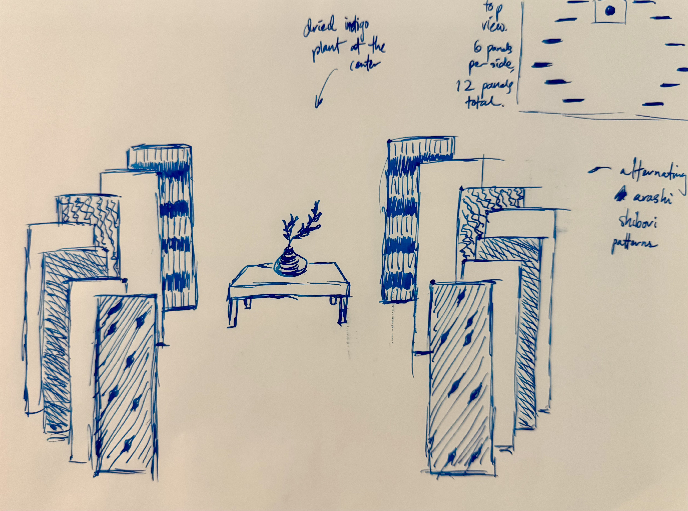
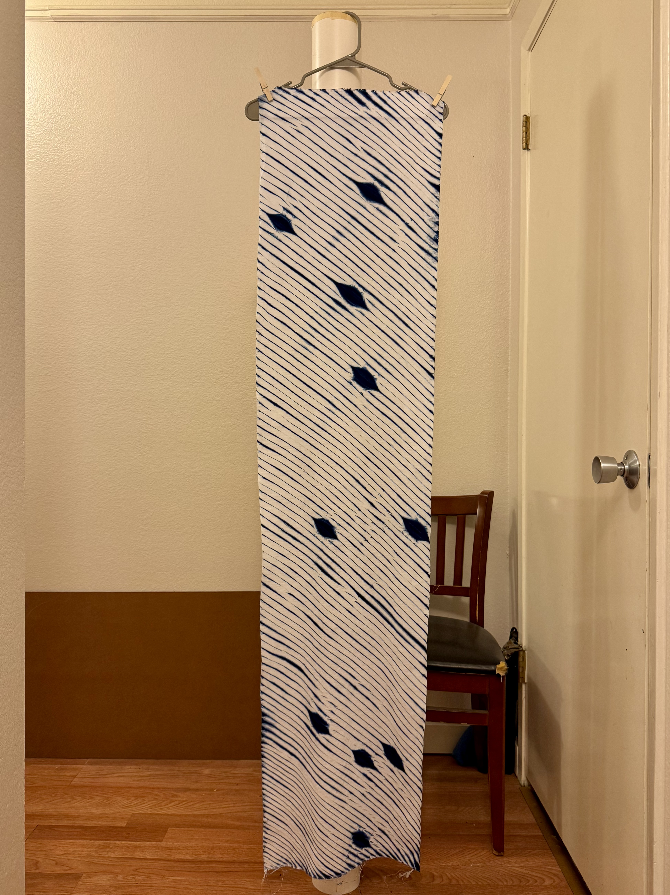
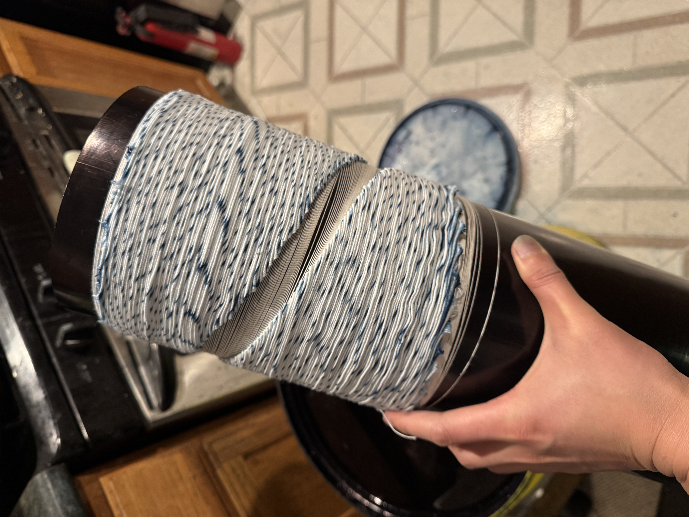

Altar



[Insert the formal description of Altar here. You can expand on the themes of fluidity, ecological kinship, or your specific material process.]
Process & Documentation
[Add your behind-the-scenes notes here. For instance: "The development of this piece involved material testing of indigo vats over a six-week period, focusing on the specific saturation levels required to achieve the desired opacity..."]